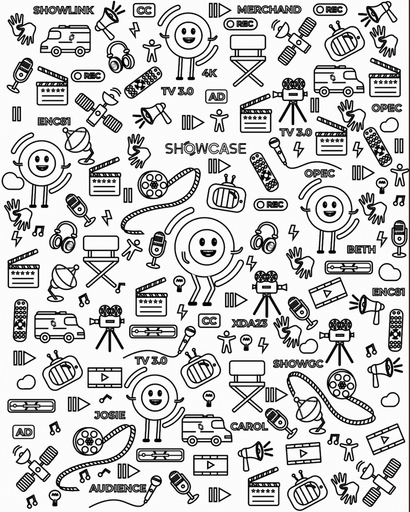

Uma parede que virou parte da experiência.
Do desenho ao espaço: uma ilustração de grande formato criada para fazer as pessoas pararem, olharem e se aproximarem do estande.

contexto
transformar uma parede em um ponto de encontro.
A proposta não era apenas preencher uma superfície. A ilustração precisava gerar curiosidade no caminho, aproximar o público e abrir conversa com potenciais leads e consumidores.


resultado
A linguagem desenhada passa a fazer parte da arquitetura do estande e cria um elemento de aproximação dentro do fluxo da feira.
01 / 07próximo case →